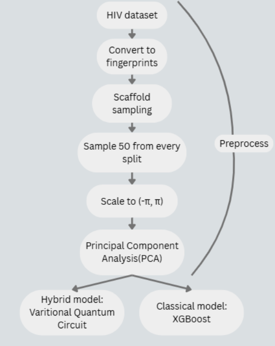
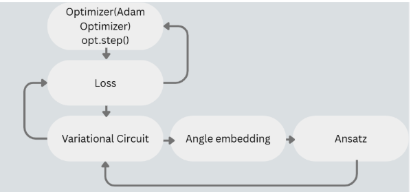
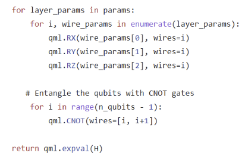

Evaluating Classical Preprocessing vs. Quantum Circuit Complexity in Hybrid Models for Molecular Activity Prediction
Background A popular approach to quantum machine learning uses trainable quantum circuits as machine learning models similar to neural networks. Quantum gates – the building blocks of quantum circuits – are used to encode data inputs x = (x1, . . . , xN ) as well as trainable weights θ = (θ1, . . . , θM). The circuit is measured multiple times to estimate the expectation of some observable, and the result is interpreted as a prediction. Then that prediction is used to calculate the loss, which then gets optimized. These models are commonly called Variational Quantum Circuit or Quantum Neural Networks, because of their similarity to Classical Neural Networks. For QNNs the qubits function as the nodes.
Resources:
Pennylane VQC demo: Code
To what extent do the quantum and classical components contribute to hybrid performance: Research Paper
Barren Plateu: Research Paper
Dimensionality Reduction Techniques: Website
Data reuploading for a uniersal quantum classifier: Research Paper
Methodology
Preprocess
The first step is to convert all data into fingerprints.
Then apply scaffold sampling. Scaffold sampling groups molecules based on Bemis-Murcko scaffold representation, then splits those groups into the train, val, test. So if it splits them into G1, G2, G3, G4, G5 it might put G1 and 2 into train, G3 and G4 into validation and G5 into test. It makes sure the model is generalizing to unseen molecule structures. This sampling method is widely used in research papers, but is not random.
Then I sample 50 positive cases and negative cases from every split. And create train, val, test splits of 100 cases.
Scale to (-pi,pi) using min max scaler. This ensure that the data is within the correct input range for angle encoding.
Then I apply Principal Component Analysis(PCA) to reduce the number of features from 2048 to a given amount. This is done because I would need 2048 qubits for 2048 features and that is impossible for current classical computers to simulate.

For training we need to define a cost function and initialize random parameters
During training the model is trying to optimize the parameters to reduce the cost function. Parameters are updated using gradient stradegies, like for example gradient descent:
\(\Theta_{n+1}=\Theta_{n}-a\nabla f(\Theta_{n})\).
The optimizer is chosen before training: opt = qp.AdamOptimizer(0.3) and in the training loop we tell the optimizer to 'take a step'(update the parameters):
weights, _, _ = opt.step(cost, weights, x_batch, y_batch)
We also have to encode our classical data into a quantum state because the computer can't understand classical data. There are multiple data encoding stradegies but angle encoding is the one I used. For angle encoding you need to have as much qubits as features youre encoding at a time. This is a limitation. If we have a 200 feature dataset, we need 200 qubits, but we can't simulate that.
After encoding the data comes the ansatz.

There are differences between model performance based on what ansatz you choose, you can find more on that in my 2026 - current project.
For this project I used this ansatz:
